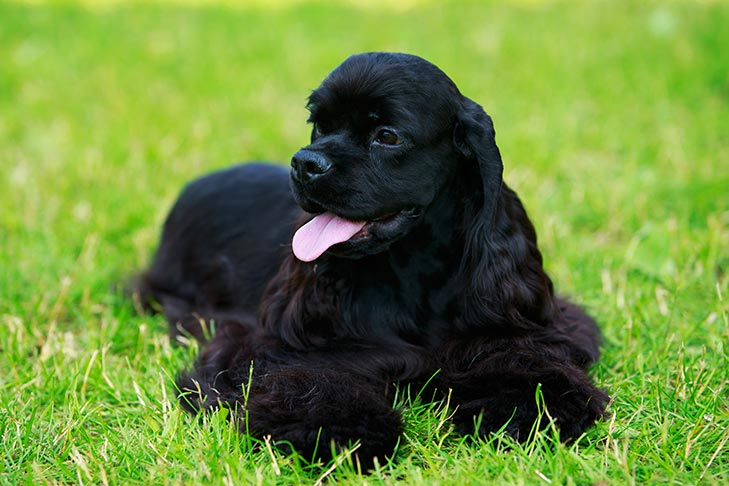
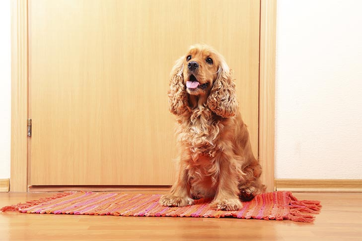
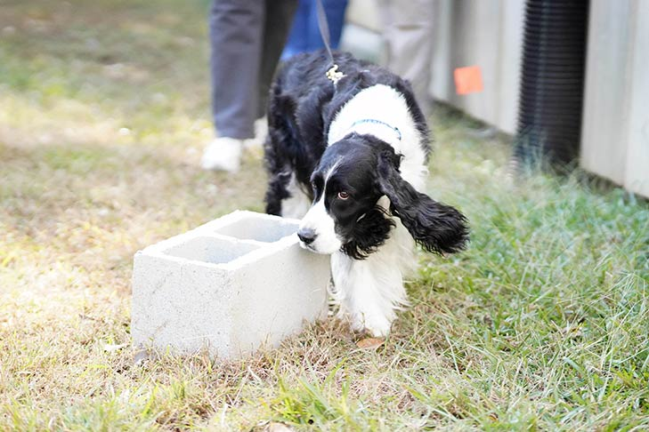
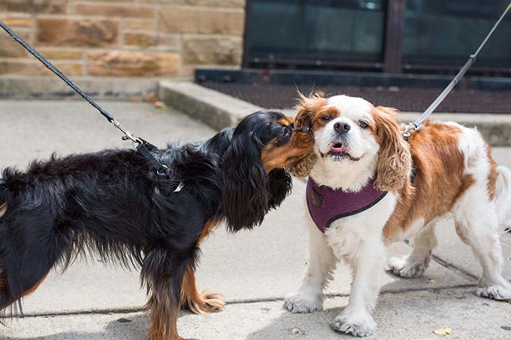
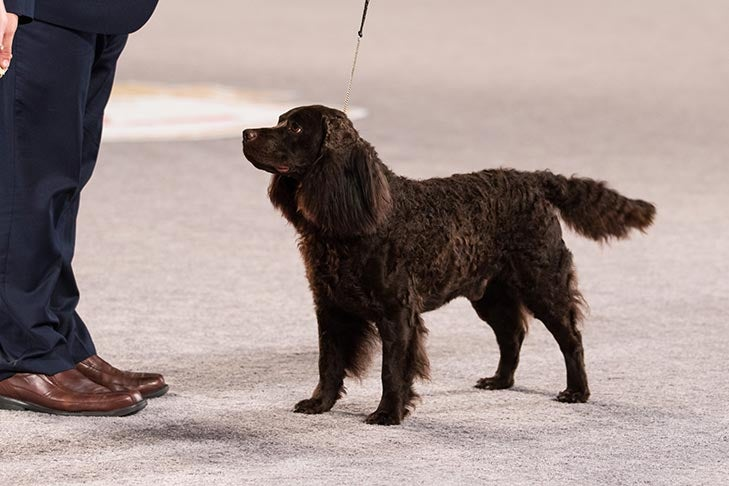
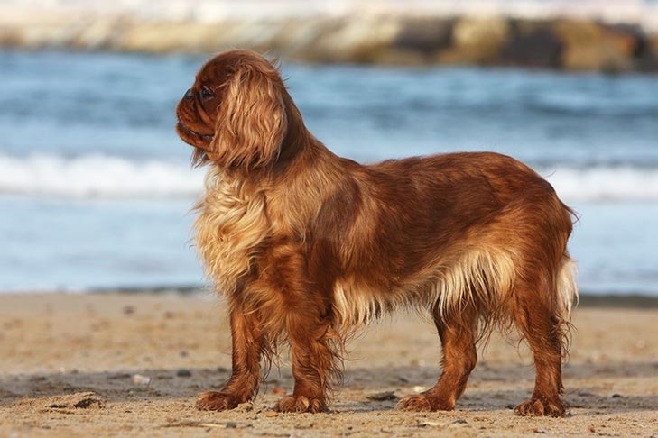
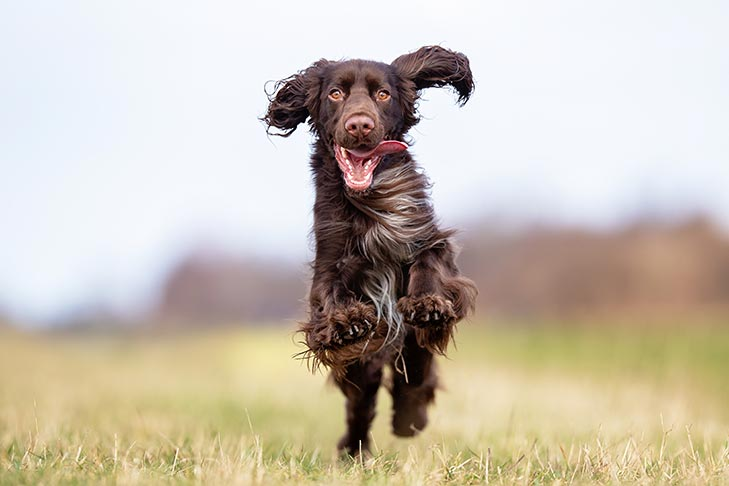
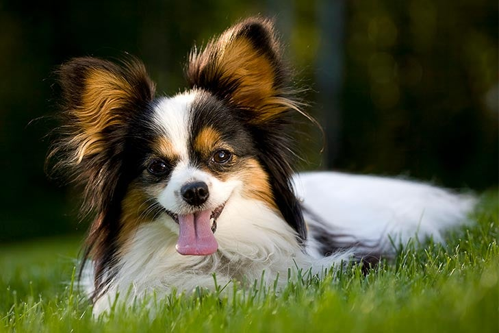
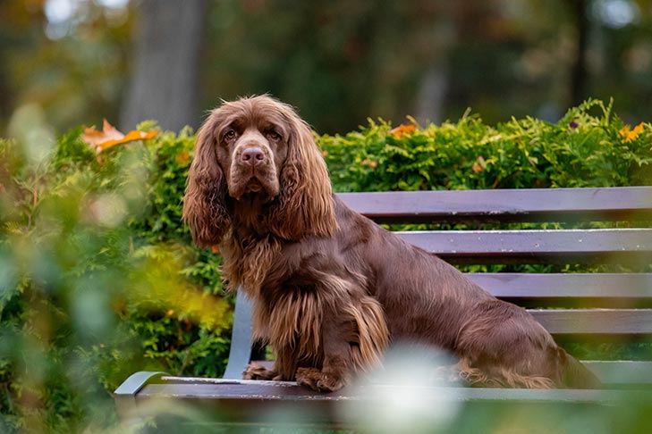
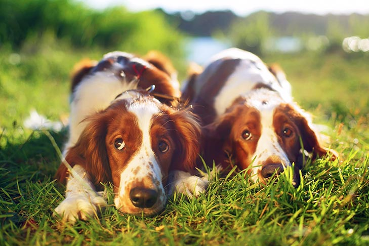

Welcome to Spaniel Lovers!
Explore my love for spaniels through photos and stories.
The spaniel is a hunter’s companion bred to find, flush, and fetch game, but their exact origin is unknown. Some scholars speculate the type originated in Spain, hence the name. Other research suggests that they originated in Asia and migrated west, to Europe and beyond. Spaniels go back to at least the 14th century, but their ancestry might be even older.
Gallery
Spaniels possess a great share of intelligence, affection, and obedience, which qualities, combined with much beauty, make them highly prized as companions.
Cocker Spaniel
The merry and frolicsome Cocker Spaniel, with their big, dreamy eyes and impish personality, is one of the world’s best-loved breeds. They were developed as hunting dogs, but Cockers gained their wide popularity as all-around companions.
English Cocker Spaniel
English Cocker Spaniel lovers often use the word “merry” to describe their breed. Upbeat in the field and mellow at home, this compact, silky-coated bird dog is widely admired for their delightful personality and irresistible good looks.
English Springer Spaniel
The English Springer Spaniel is a sweet-faced, lovable bird dog of great energy, stamina, and brains. Sport hunters cherish the duality of working Springers—good-looking, mannerly pets during the week, and trusty hunting buddies on weekends.
Cavalier King Charles Spaniel
The Cavalier King Charles Spaniel wears their connection to British history in the breed’s name. Cavaliers are the best of two worlds, combining the gentle attentiveness of a Toy Group breed with the verve and athleticism of a sporting spaniel.
American Water Spaniel
The American Water Spaniel, native to the lake country of the upper Midwest, is an upbeat, outdoorsy athlete who loves to hunt and swim. They are known to be happy, eager, and charming, though aloof with strangers and a bit stubborn.
English Toy Spaniel
The merry English Toy Spaniel was bred to be the companion of kings. But ETS are spaniels first and pampered lapdogs second, and beneath the patrician exterior beats the heart of a dog that is bright, loving, and willing to please.
Field Spaniel
The sweet and sensitive Field Spaniel is famously docile, but vigorous and game for anything when at play or in the field. These close cousins to Cocker Spaniels and Springer Spaniels may be small in number, but their charm is enormous.
Papillon
The quick, curious Papillon is a toy dog of singular beauty and upbeat athleticism. Despite their refined appearance, the Pap is truly a “doggy dog,” blessed with a hardy constitution. Papillon fanciers describe their breed as happy, alert, and friendly.
Sussex Spaniel
“Placid, affectionate, even-tempered, true-blue, loyal.” These all are words used to describe the Sussex Spaniel, a slow-but-steady hunter and congenial housedog. Their frowning expression is delightfully at odds with a typically cheerful nature.
Welsh Springer Spaniel
The Welsh Springer Spaniel is a vigorous, medium-sized bird dog of happy disposition, known for versatility in the field, companionability at home, and dashing good looks anywhere. The Welshie is among Britain’s oldest sporting breeds.